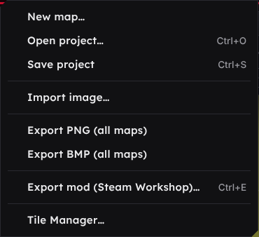
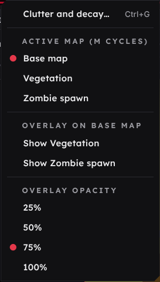
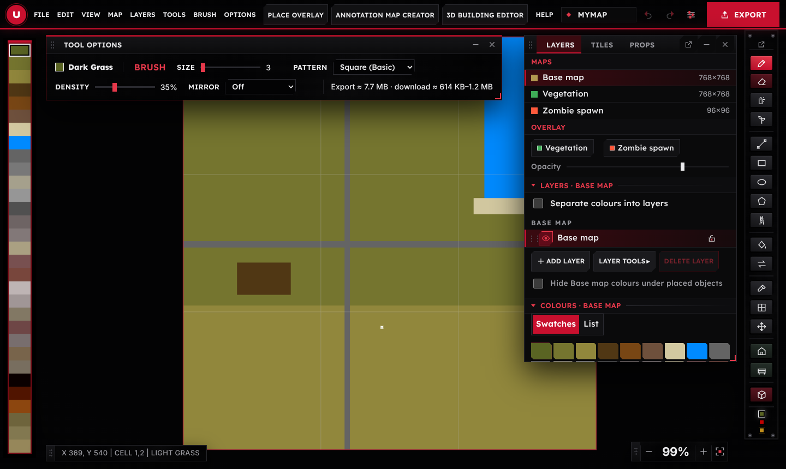
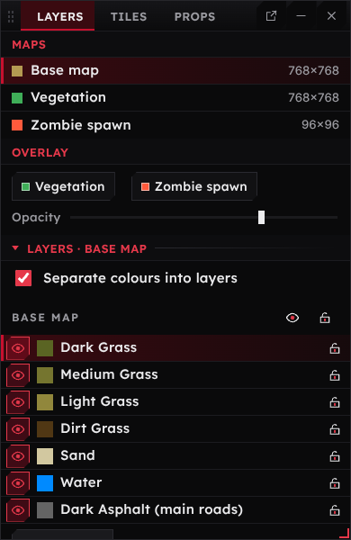
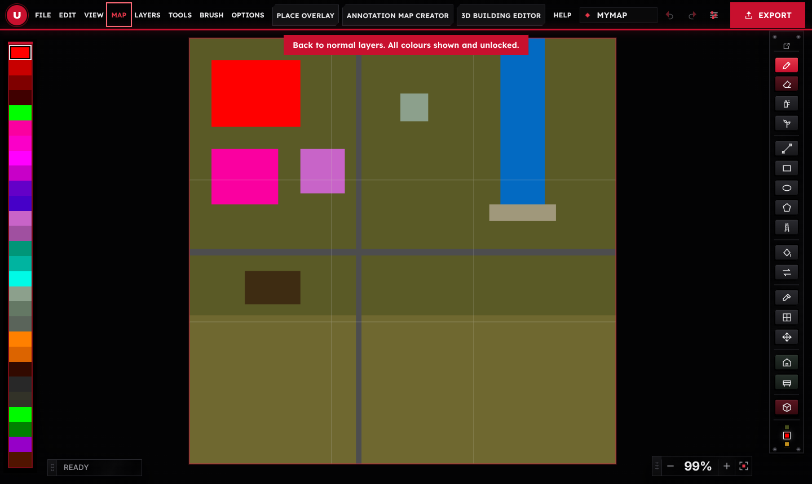
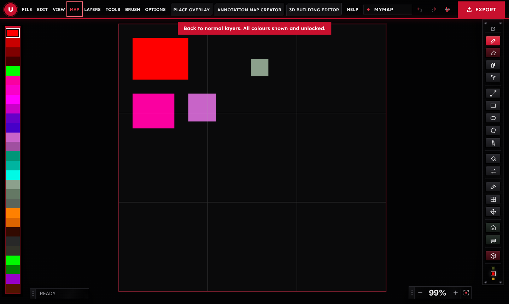
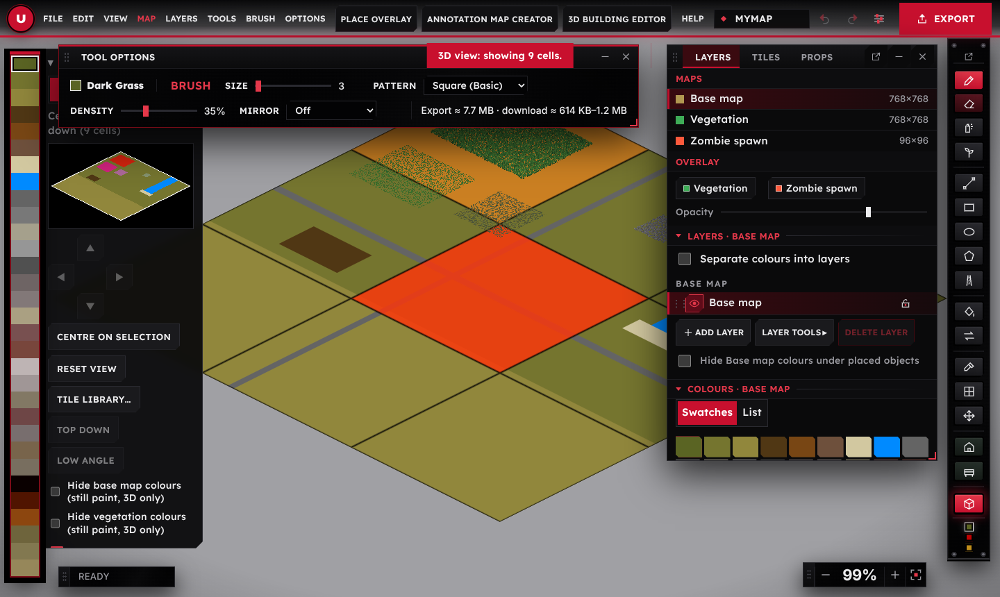
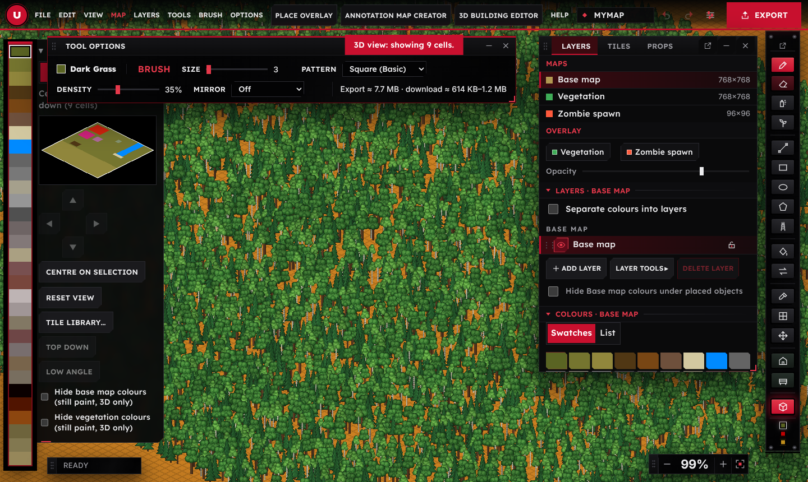
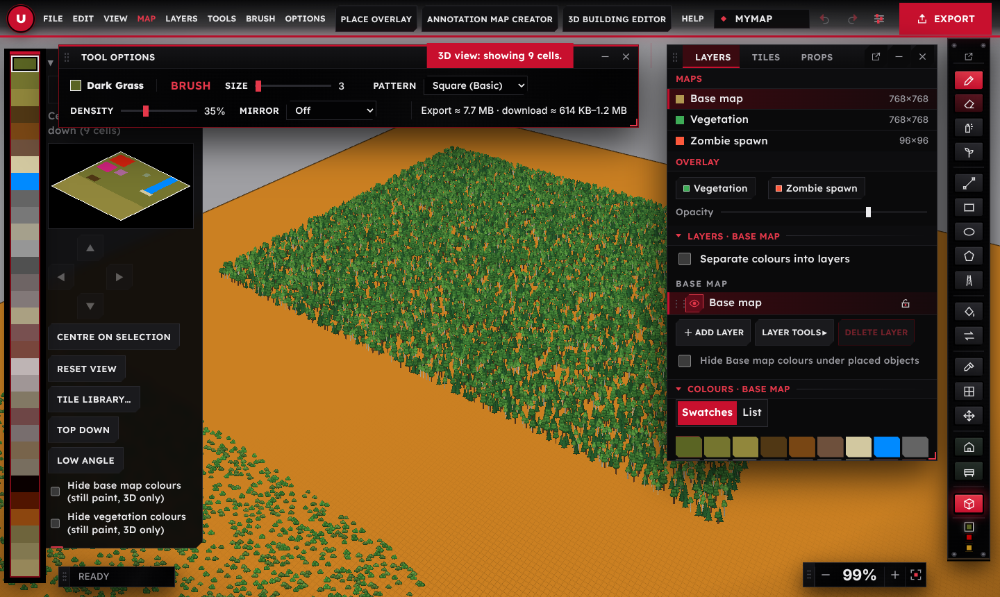
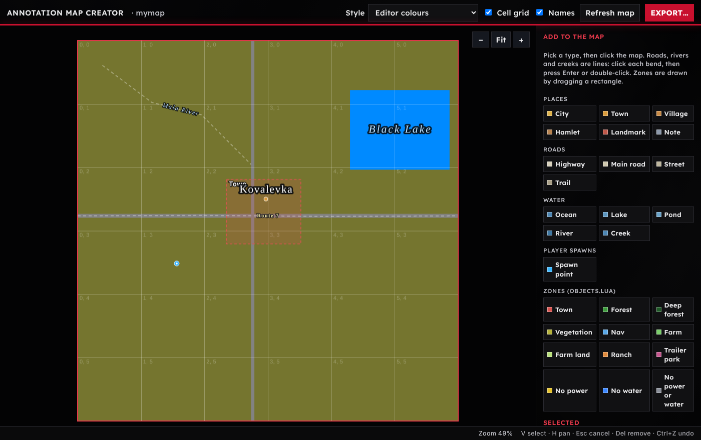

Umbra Editor
A map editor for Project Zomboid Build 42. It draws the images that WorldEd turns into a map: the base map, the vegetation map and the zombie spawn map. One pixel is one tile, and one cell is 256 by 256 tiles. Maps of up to 100 by 100 cells are supported.
Menus
Everything in the editor is reached from the menu bar at the top. Click a menu name to open it, or press Tab to reach the bar and use the arrow keys and Enter. Esc closes it. The last two buttons before Help are tabs that open a tool in its own window.
File
| Item | What it does |
|---|---|
| New map | Starts an empty map. Enter the width and height in cells; one cell is 256 by 256 tiles. |
| Open project Ctrl+O | Opens a saved .pzmap project with all its maps, layers, names, spawn points, zones and mod settings. |
| Save project Ctrl+S | Saves everything into one .pzmap file. |
| Open the Umbra Editor folder | Opens the Umbra Editor folder in your Documents, made the first time you save. Projects holds saved projects, Exports holds map pictures, in-game map files and exported mods, and Buildings holds building files. The Save and Open windows start in the right one. |
| Import image | Loads a PNG or BMP into the map that is selected in the right panel. Each pixel is matched to the nearest colour. |
| Export PNG / Export BMP | Writes name.bmp, name_veg.bmp and name_ZombieSpawnMap.bmp (or PNG copies). BMP is the format WorldEd reads. The name comes from the Map name box at the top right. |
| Export mod (Steam Workshop) Ctrl+E | Writes the whole mod folder and the Workshop files. See Exporting a mod. |
| Tile Manager | Opens Tile Manager, where the game's tilesheets and other game files are added. |


Edit
| Item | What it does |
|---|---|
| Undo / Redo Ctrl+Z / Ctrl+Y | Reverses or repeats the last change, on whichever map it was made. |
| Select cells C | Switches to the cell tool: click or drag to select whole 256 by 256 cells. |
| Fill / Clear selected cells | Fills the selected cells with the current colour, or empties them. |
| Deselect cells | Removes the cell selection. |
View
| Item | What it does |
|---|---|
| Zoom in / out + - | Zooms the map. The mouse wheel does the same. |
| Fit to window Ctrl+0 | Shows the whole map. |
| Actual size Ctrl+1 | One map pixel per screen pixel. |
| 3D view V | Shows the map (or a window of up to 6 by 6 cells) in an isometric view with the game's tiles. Painting works there too. See 3D view. |
| Cell grid / 16-tile grid / Tile grid G | Lines at every cell, every 16 tiles, or every tile. The finer grids appear when zoomed in. |
Map
| Item | What it does |
|---|---|
| Active map M | Chooses which map is painted: Base map, Vegetation or Zombie spawn. The tabs at the top of the right panel do the same. |
| Overlay | Shows the other maps faintly on top of the active one, for example the vegetation over the base map. |
| Overlay opacity | How strongly the overlays are drawn. |


Layers
Each map can have several layers, like a paint program, so that for example roads can be kept apart from the terrain. Layer tools in the Layers panel opens a menu beside the panel with the usual tools (new, duplicate, merge down, rename, move, solo, show or lock all, clear, delete), and layers can be dragged by their handle to change their order. Separate colours into layers instead gives every colour its own layer that can be hidden or locked. See Layers and separate colours.
The Ring layout
The editor opens in the Ring layout. The map takes the whole window and every control floats over it, so you can arrange the screen the way you work.


- The round red logo at the top left folds the menu bar. Click it and the bar shrinks to just the logo, giving the map the whole top edge; click it again and the bar opens as it was. The choice is remembered.
- Windows. The panel (Layers, Tiles, Props) and the tool options are windows. Drag a title bar to move one, drag an edge or a corner to resize it, press the fold button (or double-click the title bar) to roll it up, and the close button to hide it. The View menu lists every window, so a closed one always has a way back; Reset window positions puts everything where it started. Places and sizes are remembered between sessions.
- Pop out. The pop out button on the panel and at the top of the tool bar turns that part into a real window of its own, which you can drag onto a second monitor and size freely. Double-click its title bar to dock it again. The tool options window stays inside the editor; drag any of its edges or corners to make it wider, narrower, taller or shorter. Everything keeps working there: tabs, menus, tool tips and keyboard shortcuts. Close the pop-out window, or press its dock button, to bring the part back into the editor. A window left popped out opens again where it was the next time you start the editor.
- The tool bar is the slim console on the right. Hover a key for its name, its shortcut and what it does. The three small lamps at the bottom show the current colour of the Base, Vegetation and Zombie spawn maps.
- The colour rail runs down the left edge in its own frame. Hover a colour for its name, its RGB value (for the spawn map, its density as Grey N of 255) and the tile or tiles it places; click to choose it. The keys 1 to 9 still pick the first nine.
- Readouts. The cell coordinates and the zoom (with minus, plus and Fit) are small movable readouts: drag them by their grip. Show or hide them from the View menu.
- The wheel. Press W (or choose Wheel in the View menu) for a ring of shortcuts at the pointer: the panel tabs, 3D view, Fit, Grid, Undo and Redo, and the three maps in the middle.
- Layers each have a bin button, and there is a Delete layer button under the list. A map always keeps at least one layer, and a deleted layer comes back with Ctrl+Z.
Tools
The map fills the whole window, and everything else floats over it. The panel window has three tabs: Layers (Maps, Layers and Colours as foldable groups), Tiles (the tile library, with Open Tile Manager) and Props (Buildings and Props). The tool options window holds the settings of the chosen tool and, at its far right, the estimated export size. The tool bar is the slim console of keys on the right, the colour rail runs down the left edge, and the cell coordinates and zoom readouts sit at the bottom. Choosing Buildings or Props opens the panel on the Props tab and any painting tool switches back. The Export button at the top right opens the mod export. Fit leaves the map clear of the colour rail and the tool bar. See The Ring layout for moving, resizing and popping out the windows.
The painting tools. The same tools are the keys of the tool bar on the right; hover a key for its name, its shortcut and what it does. The settings for the chosen tool, such as size and density, are in the tool options window.
| Tool | Key | What it does |
|---|---|---|
| Brush | B | Paints with the current colour. |
| Eraser | E | Removes colour from the active map only (it sets the tile to empty). |
| Forest spray | T | Sprays single pixels of the current colour. |
| Natural | N | Paint an area and release: the area is filled with organic patches instead of a solid block. |
| Line | L | Drag to draw a straight line the width of the brush size. |
| Rectangle | R | Drag to draw a rectangle. |
| Ellipse | O | Drag to draw an ellipse or circle. |
| Polygon | P | Click to add corners. |
| Road | D | Click to place the points of a road. |
| Flood fill | F | Click to fill the connected area of the same colour on the active map. |
| Replace colour | X | Click a pixel to swap every pixel of that colour on the whole active map for the current colour. |
| Colour picker | I | Click to take the colour from the map. |
| Cell select | C | Click or drag to select whole 256 by 256 cells. |
| Buildings | U | Opens the Buildings panel on the right: choose a building, then click the map to place it. |
| Props | K | Opens the Props panel on the right: choose a prop or tile, then use its tools (Place, Line, Fill area, Scatter, Replace, Pick, Remove, Hide tile). |
| Pan | H | Drag to move the view. |
Brush
The shape of the brush stamp, in three groups: Basic (square, round, diamond and similar), Patterns (dither, hatch, brick, waves and others) and Organic (blotches, fuzzy edges and scattered trees). The pattern can also be picked in the bar under the menus.
Options
A small panel with the Performance level and the memory limit of the desktop app.
Place Overlay
The Place Overlay switch in the top bar (also in View) draws the annotation map over the map you are painting: names of towns and landmarks, roads, rivers and creeks with their names, lakes, zones as coloured boxes, and spawn points as blue dots. It only helps you see where things are while you paint. It never changes the map, and painting works as usual underneath. Names come from the Annotation map creator; with none placed yet the switch says so. This is a first version.
Annotation map creator
A tab that opens the Annotation map creator in its own window, for names on the in-game map, player spawn points and zones. Shortcut Ctrl+Shift+M.
3D building editor
A tab that opens the 3D building editor in its own window. Shortcut Ctrl+Shift+B.
Help
This documentation (F1), the list of keyboard shortcuts and About.
Maps
A Project Zomboid map is made from three images that share a name:
| Map | File name | What it does | Scale |
|---|---|---|---|
| Base map | name.bmp | The ground: grass, dirt, sand, water, roads, paving and rocks. | 1 pixel = 1 tile |
| Vegetation map | name_veg.bmp | What grows on the ground: trees, bushes, flowers, ferns, boulders, crops and litter. | 1 pixel = 1 tile |
| Zombie spawn map | name_ZombieSpawnMap.bmp | How many zombies spawn in each area, as a greyscale image. Black is none, white is the most. | Smaller than the other two, see below |
The tabs at the top of the right panel switch between them, and the colours below them belong to the chosen map. Each map has its own layers. Undo is shared between the maps, so Ctrl+Z always reverses the last action, on whichever map it was made.
The zombie spawn map scale
The spawn map is painted in square blocks of 8 by 8 tiles, which is the size the game uses: it keeps one zombie value per 8 by 8 chunk, and the lot files written by the mod export take one value per chunk. The exported _ZombieSpawnMap.bmp for WorldEd has one pixel per block. The block size is fixed at 8 (older projects that were saved with another size keep it).
Colour reference
Every colour is an exact RGB value from Rules.txt. The editor never blends or antialiases, so the exported images contain only these colours. A colour can be renamed or given another RGB value below the colour list in the right panel; change an RGB value only when Rules.txt uses the same colour, because it changes what is exported.
Rule sets: Vanilla and your own colours
A Rules.txt can hold more than one set of colours. The editor splits it into Vanilla and one or more named sets, and shows one set at a time in the colour strip on the far left and in the Colours panel. When there is more than one set, a flip button sits above the strip (and in the Colours panel): Turn page shows the next set, for both the base map and vegetation. A set is made in either of two ways:
- A comment line. A line such as
// ===== MY SET =====(or one starting with#) starts a set called MY SET. It runs until the next such line. A line namedVanillagoes back to Vanilla. - The label. If the file has no such lines, every rule whose label starts with Umbra (for example Umbra Swamp Light) goes in the Umbra set.
All the sets share one palette, so the map, the exported images and Rules.txt are the same as before; only the lists you pick from change. Import a Rules.txt from the Tile Manager with Import Rules.txt.
Turning the page changes only which colours you can pick from. Colours already painted stay as they are, and each set's colours keep their own RGB values.
Base map colours
| Colour | RGB | What it is |
|---|---|---|
| Empty | 0 0 0 | Nothing is placed. Used for tiles that are not part of the map. It is stored as black. |
| Dark Grass | 90 100 35 | Ground grass, darkest shade. The vegetation colours marked "needs grass" check for this colour, the medium one or the light one underneath. |
| Medium Grass | 117 117 47 | Ground grass, middle shade. |
| Light Grass | 145 135 60 | Ground grass, lightest shade. |
| Dirt Grass | 80 55 20 | Ground that mixes dirt and grass. |
| Dirt | 120 70 20 | Bare dirt ground. |
| Clay | 110 80 60 | Clay ground. |
| Sand | 210 200 160 | Sand ground. |
| Water | 0 138 255 | Water tiles, for the sea, rivers and lakes. |
| Dark Asphalt (main roads) | 100 100 100 | The main road surface, labelled "main roads" in Rules.txt. |
| Medium Asphalt | 120 120 120 | Medium asphalt road surface, a lighter grey than the main road. |
| Light Asphalt | 165 160 140 | Light road surface (the lightgravel alias). |
| Smooth Asphalt | 150 150 150 | Smooth, light grey asphalt. |
| Gravel Asphalt | 80 80 80 | Dark asphalt with a gravel look. |
| Dark Pothole | 110 100 100 | Dark asphalt with potholes. |
| Light Pothole | 130 120 120 | Light asphalt with potholes. |
| Paving Stone 1 | 170 160 130 | Paving stone floor, variant 1 of 8 (floors_exterior_tilesandstone_01, tile 0). |
| Paving Stone 2 | 120 80 80 | Paving stone floor, variant 2 of 8 (floors_exterior_tilesandstone_01, tile 1). |
| Paving Stone 3 | 120 70 60 | Paving stone floor, variant 3 of 8 (floors_exterior_tilesandstone_01, tile 2). |
| Paving Stone 4 | 190 180 180 | Paving stone floor, variant 4 of 8 (floors_exterior_tilesandstone_01, tile 3). |
| Paving Stone 5 | 160 150 150 | Paving stone floor, variant 5 of 8 (floors_exterior_tilesandstone_01, tile 4). |
| Paving Stone 6 | 130 120 100 | Paving stone floor, variant 6 of 8 (floors_exterior_tilesandstone_01, tile 5). |
| Paving Stone 7 | 110 70 70 | Paving stone floor, variant 7 of 8 (floors_exterior_tilesandstone_01, tile 6). |
| Paving Stone 8 | 120 110 110 | Paving stone floor, variant 8 of 8 (floors_exterior_tilesandstone_01, tile 7). |
| Vertical Dirt | 120 100 75 | Dirt path running north to south. |
| Horizontal Dirt | 120 110 95 | Dirt path running east to west. |
| Scorched Earth | 10 0 0 | One black burnt-ground tile, for burnt areas. |
| Charred Earth | 80 20 0 | Burnt ground, a mix of charred tiles. |
| Gravel Dirt | 140 70 15 | Gravel over dirt. |
| Rockssmall | 110 100 60 | Ground with small rocks. |
| Rocksmedium | 130 120 80 | Ground with medium rocks. |
| Rockslarge | 150 135 90 | Ground with large rocks. |
Vegetation colours
The last column shows how each colour splits its tiles between kinds of plant, for example 80% trees, 20% grass. WorldEd picks one of the colour's tiles at random for every pixel, so a colour with many tiles in it is a mix.
Rules.txt holds a version of each for the three grass base colours, and WorldEd picks the right one from the base map under the pixel:
- Dark Grass
90 100 35 - Medium Grass
117 117 47 - Light Grass
145 135 60
| Colour | RGB | What it is | Tile mix |
|---|---|---|---|
| Empty | 0 0 0 | Nothing is placed. | – |
| Trees | 255 0 0 | A tree on every tile. Each pixel gets one of four tree tiles from vegetation_trees_01 (tiles 8 to 11), chosen at random. | 100% trees |
| Dense Trees + Grass needs grass | 200 0 0 | A thick forest with long grass between the trees. Needs one of the three grass base colours. | 80% trees, 20% grass |
| Moderate Trees + Grass needs grass | 127 0 0 | A forest with gaps and long grass. Needs grass underneath. | 50% trees, 50% grass |
| Sparse Trees + Grass needs grass | 64 0 0 | Scattered trees in grass. Needs grass underneath. | 62% grass, 21% other, 17% trees |
| Long grass needs grass | 0 255 0 | Long grass overlay only. Needs grass underneath. | 64% grass, 36% other |
| Bushes | 250 0 160 | Bushes on every tile. | 100% bushes |
| Bushes + Trees | 250 0 200 | A mix of bushes and trees. | 64% bushes, 36% trees |
| Bushes, Grass, Few Trees needs grass | 255 0 255 | Mostly bushes and long grass, with a few trees. Needs grass underneath. | 47% bushes, 27% trees, 27% grass |
| Dense Bushes + Grass needs grass | 200 0 200 | A thick bush cover with grass. Needs grass underneath. | 57% bushes, 43% grass |
| Sparse Bushes + Grass needs grass | 100 0 200 | A few bushes in grass. Needs grass underneath. | 63% grass, 37% bushes |
| Ferns | 70 0 200 | Ferns on every tile. | 100% ferns |
| Flowers | 200 100 200 | Flowers on every tile. | 100% flowers |
| Flowers + Grass needs grass | 160 80 160 | Meadow: flowers mixed with grass. Needs grass underneath. | 64% flowers, 36% grass |
| Dense Shoreline | 0 150 120 | Thick cover of shore plants, for the edge of water. | 75% bushes, 25% shore plants |
| Moderate Shoreline | 0 180 160 | Medium cover of shore plants. | 75% shore plants, 19% other, 6% boulders |
| Sparse Shoreline | 0 250 230 | A few shore plants. | 96% shore plants, 4% boulders |
| Boulders | 140 160 140 | Boulders. | 100% boulders |
| Boulders (walkable) | 100 120 100 | Boulders, the walkable variety. | 100% boulders |
| Boulders (driveable) | 90 100 90 | Boulders, the driveable variety. | 100% boulders |
| Farm Corn 1 (dead) | 255 128 0 | 100% corn | |
| Farm Corn 2 (dead) | 220 100 0 | 100% corn | |
| Burned Trees | 50 10 0 | Burnt tree trunks, for burnt forest. | 100% trees |
| Trash | 40 40 40 | Litter on the ground. | 100% litter |
| Road Crack | 50 50 40 | Cracks on road surfaces. Place over asphalt. | 100% cracks |
| Short grass needs grass | 0 250 0 | Short grass overlay. Needs grass underneath. | 100% grass |
| Grass + Few Trees needs grass | 0 128 0 | Grass with the odd tree. Needs grass underneath. | 62% grass, 21% other, 17% trees |
| Bushes + Grass needs grass | 150 0 200 | Bushes with grass. Needs grass underneath. | 58% bushes, 42% grass |
| Burned Trees + Grass needs grass | 80 20 0 | Burnt trees with grass. Needs grass underneath. | 50% trees, 50% grass |
Zombie spawn levels
| Level | RGB | Meaning |
|---|---|---|
| None (black) | 0 0 0 | No zombies are placed. |
| Level 1 (fewest) | 32 32 32 | The fewest zombies. |
| Level 2 | 64 64 64 | |
| Level 3 | 96 96 96 | |
| Level 4 | 128 128 128 | |
| Level 5 | 160 160 160 | |
| Level 6 | 192 192 192 | |
| Level 7 | 224 224 224 | |
| Level 8 (most) | 255 255 255 | The most zombies. |
In the editor, the spawn map is shown as a warm heat colour so that it is easy to read. The exported image is plain grey.
Layers and separate colours
Each map has layers, like a paint program. A separate layer keeps a road network apart from the terrain so that it can be hidden or locked. On export, the visible layers are merged: the top layer wins where layers overlap, and a hidden layer is left out of the export.
Rearranging and Layer tools
The top of the list is drawn on top. Drag a layer by the dotted handle on its left to move it; a green line shows where it will land. With the keyboard, focus the handle and press the Up or Down arrow key. Click the eye to hide a layer, the padlock to lock it, and double-click a name to rename it.
Layer tools opens a scrolling menu beside the panel. Merge down paints the layer into the one below it and removes it. Solo this layer hides every other layer of the map until you choose it again. Every layer tool can be undone with Ctrl+Z, including delete and merge.
Hide colours under placed objects
The tick box under the layer buttons, Hide colours under placed objects, leaves the active map's colours out under placed buildings and under props and tiles, so the object can be seen on its own. It is set for each map (Base map, Vegetation, Zombie spawn) and also lives in the Layers menu. It only changes what is shown in the 2D view. The colours stay in the map and in every export.
The Separate colours into layers tick box works differently. It treats every colour of the active map as its own layer. For each colour:
- Hide (eye button) shows what is underneath. Hiding a colour only changes the display. The export always contains every colour.
- Lock (padlock) stops every tool from changing pixels of that colour.
- Solo: Alt+click on the eye shows only that colour, and Alt+click again shows them all.
The Colours panel stays available in this mode, so the colour to paint next can still be chosen from the whole palette, not only from the colours already in use. This is the quickest way to check every road, every forest or every water tile. Layers > Only list colours in use keeps the list short.


Overlays
One map is edited at a time, but the other maps can be drawn on top of it. Under the map tabs, the Overlay buttons switch each other map on or off, and Opacity sets how strongly it shows. The base map is on by default when vegetation or zombie spawn is edited, so that the ground under the drawing stays visible. Overlays are for display only; nothing is painted on them.




Saving, importing, exporting
| Action | What it does |
|---|---|
| Save project Ctrl+S | Saves everything (all maps, layers, palettes, settings and the in-game map names) in one .pzmap file. Large areas of a single colour are stored compactly, so projects stay small. |
| Open project Ctrl+O | Opens a .pzmap project. Projects saved by the previous version of the editor open as well. |
| Import image | Loads a PNG or BMP into the active map. Every pixel is matched to the nearest colour in the palette, so an exact map image imports without change. |
| Import Rules.txt | In the Tile Manager, with Choose .rar or file. Replaces the colour lists with the colours in a Rules.txt file, and reads its tile names for the 3D view. This suits game versions that use other colours. |
| Export BMP (all maps) | Writes name.bmp, name_veg.bmp and name_ZombieSpawnMap.bmp. BMP is the format for WorldEd. Empty spawn maps are skipped, and the editor reports it. |
| Export PNG (all maps) | The same images as PNG, for sharing or editing elsewhere. |
| Export mod (Steam Workshop) Ctrl+E | Writes the whole mod: the Build 42 mod folder, the Steam Workshop files and the BMP images for WorldEd. See Exporting a mod. |
The name used in the file names is the Map name box at the top right of the window.
3D view
Pressing V or choosing View > 3D view shows the map the way TileZed does: a 2:1 isometric view with tiles as diamonds on a grey background, a dotted tile grid and black cell borders. A window of cells is shown at a time and is edited live with the same tools, colours and undo as the 2D view. By default the window fits your map: a map of up to 36 cells (a 6 by 6 map, say) is shown whole, and a larger map shows 3 by 3 cells that you move around. Window size in the 3D panel sets it to 2 by 2 up to 6 by 6 cells instead.
The game tiles are recommended
The 3D view works without the game's tiles and draws simple stand-in pictures for anything missing. With the Build 42 tilesheets in the Tile Manager it shows the real tiles. Nothing is locked without them.


Moving around
| Action | Result |
|---|---|
| Left button | Paint with the active tool. |
| Middle button drag, or Space + drag | Pan. |
| Mouse wheel | Scroll the view. (The panel can switch the wheel to zoom.) |
| Ctrl + wheel | Zoom toward the pointer. |
| Arrow keys | Move the view. |
| Home | Reset the view. |
| Click on the small map in the panel | Move the window to that part of the map. |
| The four arrow buttons | Move the window by one cell. |
| Esc or V | Back to the 2D view. |
These tools work in 3D: Brush, Eraser, Forest spray, Natural, Flood fill, Replace colour and Colour picker. The shape tools and Cell select are 2D only. A translucent preview shows where the brush will paint.
Camera modes
Isometric is the fixed TileZed camera. Free 3D is a perspective camera: the right button orbits, and Top down and Low angle are presets.




Panel options
- Tile grid (dotted) and Cell borders.
- Trees, bushes and rocks turns the objects from the vegetation map on or off. Object detail sets how many are drawn when no tile art is loaded.
- Tile art (from the Tile Manager) uses the real game tiles that have been imported. See Tile Manager and custom tiles.
- Vegetation colours on the ground paints the vegetation map colours over the ground.
- Hide base map colours and Hide vegetation colours take those colours off the ground in the 3D view only, so just the tiles, trees and objects are left to look at. You can still paint, and the colour picker still reads the colour of what you click. The 2D view, the map and every export are unchanged.
- Zombie spawn heat shows the spawn map as heat on the ground.
- TileZed grey background and Mouse wheel zooms.
Tile Manager
The Tile Manager holds the game's tilesheets: the pictures the game builds the map from. The editor works without them, but the Build 42 tilesheets are recommended: with them the 3D view, the 3D building editor and the exported map look like the game. They only have to be added once.
Importing straight from your game
The quickest way is Import from my Project Zomboid install, at the top of the Tile Manager (it is also offered in the window that says tiles are missing, and as Import from my game in the Props panel). The desktop app looks for a Steam copy of Project Zomboid by itself, including Steam library folders on other drives. If it cannot find it, or in the browser, choose the game folder (the one that contains media). The editor reads the game's own tile files (media/texturepacks, the 2x packs) on your computer, rebuilds the tilesheets from them and shows them in the usual review, sorted into building parts, props and terrain. Nothing is downloaded and no game files are changed or copied anywhere else. It leaves out sheets you already have, and signs and other sheets unless you tick Also signs and other sheets. The game's tile art belongs to The Indie Stone and is not included with the editor, so this step reads it from your own copy.
Adding the game tiles by hand
- Open Tile Manager. File > Tile Manager, or Open Tile Manager in the window that says tiles are missing. You can also just drop files or a whole folder on the Buildings or Props panel, and the Tile Manager opens with them already read.
- Add anything. Press Choose RAR or ZIP, Add PNG sheets or Add a folder, or drop files, archives or whole folders on the window. Tilesheets, TileZed catalogs,
.tilesfiles,Rules.txt, and finished buildings (.tbxor.pzbld) can all be in the same selection. A RAR of up to 2 GB works. A ZIP can be any size: only the files that are used are unpacked. - Review. The Tile Manager checks every file and sorts it (see below). Press Import. Anything that cannot be used is shown with the reason and is left out.
What the Tile Manager detects
Each file is recognised by what it is and goes where it is used:
| It finds | It is | It goes to |
|---|---|---|
A .tbx or .pzbld file (a Name_basement.tbx next to Name.tbx is joined to it) | A complete building | The Buildings panel and the Buildings folder |
A sheet named furniture_, appliances_, lighting_, location_, trash_, decorations_, fixtures_ (other than doors, windows and stairs) and similar | Props | The group Props, browsable in the Props panel under Tilesheets |
A sheet named walls_, floors_, roofs_, fixtures_doors, fixtures_windows, fixtures_stairs, carpentry_02 | Building parts | The group Building parts, which the 3D building editor reads its walls, floors, roofs, doors and windows from |
A sheet named blends_, vegetation_ and similar | Terrain | The group Terrain |
BuildingFurniture.txt | The furniture list (props) | The Props panel's game furniture list |
BuildingTiles.txt, BuildingTemplates.txt | Building parts | The 3D building editor |
.tiles files, Tilesets.txt, Rules.txt, Blends.txt | Game data | The tiles folder |
Categories. Inside those groups every sheet has a category taken from the game's own sheet names: for example Exterior walls, Interior walls, Floors, Roofs, Doors, Windows, Stairs under building parts, Furniture, Appliances, Lighting, Shops and places, Rubbish, Fencing under props, and Vegetation, Ground blends, Road markings under terrain. The Props panel's Tilesheets list shows them as Group, then Category, then Sheet, and every level opens and closes (Expand all and Collapse all do the lot). A sheet the editor does not recognise goes to Other sheets.
A selection can hold several of these at once, for example a house together with its furniture and wall sheets: the review lists them in sections (Complete buildings, Props, Building parts, Terrain, Other tilesheets), each of which can be collapsed, and the result message says how many of each were added. The filter above the list can show one kind only.
Everything in a RAR or ZIP goes to its place. The pictures go to the review and then sheets. Rules.txt, Blends.txt and Tilesets.txt go into the tiles folder, TileZed's Building*.txt catalogs into catalogs, and the game's .tiles files into tiledefs. Other files are ignored. A ZIP can be in any folder layout and must not be password protected. A RAR must be RAR 5 (or RAR 4 without compression), not encrypted, and not split into volumes. Add PNG sheets, Add a folder and Add custom tiles are under the RAR button for single files.
Choosing many files at once. In the review, Select all, Select none, Invert and Only those that look fine tick the files for you (files that cannot be imported are never ticked). Hold Shift and click a second tick box to tick everything between. The filter above the list can show only the files that look fine, need a look, cannot be imported or have a name that is already used. Set group names the group of every ticked file, and Name already used lets you skip, replace or keep both for all of those files in one go. The Import button stays at the bottom of the window while you scroll. After an import the new sheets are ticked in the Tilesheets list, so you can move them to a group or remove them together.
Working with several sheets. Each sheet in the list has a tick box, with Select all (only the sheets the search shows), Select none, Invert and a Select group button on each group. Move puts the ticked sheets in a group and Remove ticked removes them after a confirmation; each is one step for Undo.
Rules.txt can also be imported alone: choose it with Choose .rar or file (or drop it on the window) and it replaces the base and vegetation colours as well as filing its tile names. If it holds a second set of colours, see Rule sets.
Adding files by hand (the tiles folder)
The Tile Manager does the sorting for you, so this is only needed for very large collections or automated set-ups. In the desktop app the tiles are kept as ordinary files in a tiles folder next to Umbra Editor.exe; it can be backed up or copied to another PC. Copy files into the folders below, keeping the game's file names (the name of the file is the name of the sheet). The folder is read again each time the Tile Manager opens and when the editor starts, and sheets copied in that way are grouped by the same detection as an import.
| Folder | What goes in it |
|---|---|
sheets | The game's tilesheets (PNG or WebP). A sub-folder becomes a group. |
catalogs | TileZed's BuildingTiles.txt, BuildingTemplates.txt and BuildingFurniture.txt, for the 3D building editor and the Props panel. |
tiledefs | The game's tile definitions, such as newtiledefinitions.tiles from the game's media folder. The lot files use them to mark solid and water squares. |
Tilesets.txt | The game's Tilesets.txt (room and furniture meta data), included with the editor. Replace it with a newer one if needed. It gives the door, seat, bed and light-switch objects in rooms and the room names of furniture. |
dressing.txt | Optional. The tile choices for clutter and decay, as a text file you can edit. |
Blends.txt | TileZed's Blends.txt, next to Rules.txt. With it the lot files get the soft edges between ground types that WorldEd adds. |
Finished buildings are not kept in the tiles folder: they live in the Buildings folder of the Umbra Editor folder in your Documents (the same folder the 3D building editor saves to). A .pzbld or .tbx file copied there shows up in the Buildings panel after Refresh.
The sheets the editor needs
With the built-in Rules.txt these are:
blends_natural_01(grass, dirt, sand and clay ground and their edges)blends_natural_02(water)blends_street_01(roads)blends_grassoverlays_01(long, medium and short grass)floors_exterior_natural_01(rocks, dirt paths and gravel dirt)floors_exterior_tilesandstone_01(paving stones)floors_burnt_01(burnt ground)vegetation_trees_01(trees)vegetation_foliage_01(bushes)vegetation_groundcover_01(flowers, grass tufts)vegetation_farm_01(corn)fencing_burnt_01(burnt trees)boulders(boulders)d_plants_1(shore plants)d_generic_1(ferns and generic plants)trash_01(litter)d_streetcracks_1(road cracks)
Looking after the library
- Each sheet can be renamed, put in a group, or removed. Undo reverses the last change. Groups open and close, and Expand all groups and Collapse all groups do them all at once.
- The search box and the sort order help find a sheet. Clicking a sheet shows its tiles with their numbers.
- Sheets are read as 8 tiles across, each twice as tall as wide. For a sheet laid out differently, type the tile size into the boxes next to Add tilesheets or RAR before adding it.
Annotation map creator
The Annotation map creator is a window of its own for everything that is placed on top of the painted map: the names for the map that opens with the M key in the game, the player spawn points and the zones. Open it with the Annotation map creator tab in the menu bar or Ctrl+Shift+M. It sits beside the editor and sends every change back to it, and everything is saved in the project file.


What it shows
The window draws a picture of the open map: grass, bare ground, water, roads and forest. Three styles are available: Editor colours (the colours from the editor, the default), Parchment (similar to the in-game map) and Ink on white (for printing). The cell grid and the names can be switched on and off. After the map is changed in the editor, Refresh map reads it again. Names are never lost by a refresh.
Adding names
| Group | Types | How it is placed |
|---|---|---|
| Places | City, Town, Village, Hamlet, Landmark, Note | Choose the type, click the map where the name belongs, type the name and press Enter. Cities and towns get a marker and larger lettering. |
| Roads | Highway, Main road, Street, Trail | Choose the type, then click each bend of the road. Enter or a double-click finishes the line, and the name is typed next. The name follows the line. |
| Water | Ocean, Lake, Pond (placed like places); River, Creek (drawn like roads) | Oceans, lakes and ponds are labelled at a point, with wide letter spacing for large bodies. Rivers and creeks are drawn as lines and the name follows the bend. |
Esc cancels a line in progress, or an unnamed name. A name that is left blank is not kept.
Player spawn points
A spawn point is where a new character can start. Without at least one, the map cannot be chosen for a new game. Choose Spawn point under Player spawns and click the map; every click adds one, and no name is needed. Selecting a spawn point shows:
- Every profession can start here, ticked by default. Untick it and open Choose professions to limit the point to some professions, for example police officers at the police station.
- Floor: 0 is the ground, 1 the first floor up, -1 a basement.
- An optional name, for your own reference only.
Spawn points are written to spawnpoints.lua, listed by profession, in world tiles. The layout follows the spawn point writer in WorldEd (posX, posY, posZ).
Zones
Zones tell the game what kind of place an area is. Foraging, town zombies, farms and power or water cuts depend on them. Choose a zone type under Zones (objects.lua) and drag a rectangle on the map. A selected zone can be moved by dragging inside it and resized by dragging a corner square. Its type can be changed in the panel on the right.
| Zone | Game name | Use it for |
|---|---|---|
| Town | TownZone | Streets and buildings. |
| Forest, Deep forest | Forest, DeepForest | Woodland. Deep forest is the thick woods far from roads, with the best foraging. |
| Vegetation | Vegitation | Fields, verges and open grass. The game spells it this way. |
| Nav | Nav | Roads and paths. |
| Farm, Farm land, Ranch | Farm, FarmLand, Ranch | Farm yards, crop fields and animal ranches. |
| Trailer park | TrailerPark | Trailer parks. |
| No power, No water, No power or water | NoPower, NoWater, NoPowerOrWater | Areas cut off from the mains. |
Zones are written to objects.lua as rectangles in world tiles, the same way WorldEd writes them. Build 42 also reads the foraging zones from biome maps, one small picture per cell, and the mod export writes those from the same zones. In Build 42, Vegetation and Nav forage as ordinary ground, and Ranch and the power and water zones are not foraging zones.
Finding water automatically
Find water bodies examines the map and adds a blank name for every body of water that is large enough. Each one is sorted by shape: a very large body touching the map edge is an ocean, a long thin body is a river or a creek (by width), and the rest are lakes or ponds (by area). Rivers and creeks receive a line that follows the water. The blanks are highlighted in orange on the map and are listed as (blank). Selecting one and typing a name completes it. Remove blank deletes the ones that are not needed.
Editing names
- Select (V) a name by clicking it on the map or in the list. A double-click on the map jumps to the name box.
- Move a name by dragging it. For a line, dragging the body moves the whole line, and dragging a square moves one point. Shift+click on a selected line adds a bend, and Alt+click on a square removes it.
- Properties for the selected name are the text, the type, the letter size, the letter spacing, the angle (for places and water points) and, for lines, the direction of the text.
- List and search. All names, spawn points and zones are listed by type. The search box filters the list, and clicking an entry centres the map on it.
- Undo and redo with Ctrl+Z and Ctrl+Y.
- Navigate with the mouse wheel (zoom), H or Space+drag (pan), F (fit the whole map) and the arrow keys.
Names, spawn points and zones are stored in the project file, so they are restored when the project is opened. Starting a new map clears them.
Exporting
The Export button saves single files. The whole mod, with all of these files in the right folders, is made with Export mod in the main window.
| Format | Contents |
|---|---|
| Map picture (PNG) | The map in the chosen style with every name written on it, at 1x, 2x or 4x, with an optional cell grid, title and key. |
| Map features (XML) | worldmap.xml: named roads (highway with primary, secondary, tertiary or trail), rivers and creeks (waterway), lakes and ponds (natural=water), oceans and settlements (place), and optionally water and forest shapes made from the map. Features are grouped per 256 tile cell. First cell X and Y are the cell numbers of the map's top left corner in the game world. Shape detail sets the size of the blocks that make the water and forest shapes. |
| Player spawn points | spawnpoints.lua. First cell X and Y turn the positions into world tiles. |
| Zones | objects.lua, also in world tiles. |
| Name list (CSV) | A spreadsheet of every name with its type, position and cell. |
| Names (JSON) | All names in a structured form, for use in other tools. |
spawnpoints.lua and objects.lua follow the layouts that WorldEd writes. They could not be tested in the game from this editor, so a new game should be tried before a mod is published. The map picture, the CSV and the JSON do not depend on it. If the game rejects the XML, the picture and the name list still hold all of the work.3D building editor
The 3D building editor is a separate window for drawing a building floor by floor and looking at it from four angles. Open it with the 3D building editor tab in the menu bar or press Ctrl+Shift+B. It is based on the building editor in TileZed, with a new layout and menus that match this editor. It shares Tile Manager with the main window, so tilesheets and custom tiles added in either window appear in both.
Four views
- Plan (key 1) is a flat map of one floor. It is the quickest way to draw.
- Isometric (key 2) is the game angle. Draw directly on it. Raise and lower floors with Page Up and Page Down. View > Floors drawn in isometric hides the floors above the one you are working on.
- 3D (key 3) can be turned with a right-drag, moved with a middle-drag or Shift+right-drag and zoomed with the wheel. All the drawing tools work in it.
The fourth view, Game, is described below. Every drawing tool works in the first three views, so you can start in plan and finish in 3D or the other way round.
Drawing a building
- Choose a room in the Rooms tab, or make one with New room. A room has a name, a type, a floor tile and an inside wall tile.
- Use Draw room (R) to drag rectangles. Walls appear on their own wherever two different rooms meet, or a room meets the outside. Pencil, Fill and Erase change the shape, and Wall adds a free wall inside a room.
- Put Doors (D) and Windows (N) on walls. Right-click removes them. Doors can be a normal door or an open archway.
- Add floors with the Floor menu. Basements go below the ground floor. Place Stairs (S) on the lower floor: they are five tiles long and the floor above gets the opening automatically. Space turns them.
- Place Furniture (T) and add Roofs (O), or use Building > Add a roof over the top floor.
- Run Building > Check building to list rooms with no door, a ground floor with no outside door and stairs that lead nowhere. Click an item to see where it is.
The tool bar under the menus shows the options of the current tool. Hold Alt and click to pick the room under the pointer with any tool. Copy, cut and paste work on a selected area of one floor, and Building has rotate and flip.
Tiles inside and outside
Each wall has two faces. The face towards a room uses that room's inside wall tile. The face towards the outside uses the building's exterior wall tile. The Tiles tab sets the building's choices for exterior walls, trim, doors, windows, curtains, stairs, roofs and the default inside walls and floors. Pick a room's own floor and inside wall in the Rooms tab.
A tile choice is an entry, a named set of tile names for one purpose (for example the west and north pieces of a wall). Every entry is made of the game's own tiles. The editor knows the game's wall, floor, door, window, stair, roof and furniture sets (from TileZed's catalogs, bundled as names only, with no pictures) and offers each one as soon as the tilesheets it uses are in the Tile Manager. Floors and ceilings in sheets the catalog does not know are found by their sheet names. Nothing is offered for sheets you have not imported, and there are no stand-in colours or shapes. With nothing imported the Tiles and Furniture panels say so and point to the Tile Manager. To add more:
- Add your tilesheets in the Tile Manager (Tiles > Tile Manager). Tile names are the sheet name and a number, for example
walls_exterior_01_8. - Make your own entries with New entry in any tile picker, or import the catalogs of a mod's tile set with Tiles > Import TileZed catalogs (
BuildingTiles.txtandBuildingFurniture.txt). The Tile Manager also files these when they are in a folder or archive you drop on it. Buildings saved by earlier versions with plain colours or shape furniture are cleaned when opened: those parts are removed and you choose game tiles instead.
Game view
The fourth view (key 4, button Game) draws the building the way the game builds it from your plan: the real wall pieces for each room, corner and end pillars, doors and windows in their frames, curtains on the inside of outside windows, ceilings, stairs with the hole above them, and roofs on the level above. It uses the same layout rules as TileZed and the same tiles that go into the lot files, so what you see is what the map gets. The game's lighting, weather and shaders are not drawn. It needs the full tilesheets in the Tile Manager; where a sheet is missing the square is drawn as a plain colour and the status bar counts the missing tiles. View > Cut away upper floors and Low front walls let you see inside.
Furniture and props
Everything the editor offers is in sections that open and close: the furniture by kind (Kitchen, Bedroom, Lighting...), the tile pickers by what the tiles are (Exterior walls · House, Floors · Tilesandwood...), with Expand all and Collapse all.
The furniture picker (T) lists the furniture from the game's own tile definitions, with a picture of each piece. Choose a source: Game furniture, Any tile or one of the imported catalog groups. The room filter shows what suits the selected room. Pieces are tagged (container, bed, seat, light switch, no art) and show the game's names. The list is sorted into collapsible sections (Lighting, Bathroom, Kitchen, Bedroom, Office and school, Shop and storage, Outdoor and garden, Living room, Appliances and Other) built from the game's own group names; each heading shows how many pieces it holds. Expand all and Collapse all open or close every section, the sections you leave open are remembered, and the section holding the piece you are placing opens by itself. Searching shows only the sections with matches. Any tile uses the group names from Tile Manager as its sections. A long section shows a page at a time with a button for more.
Game room names
In the Rooms tab, Game room name is the name the game uses for loot and zombie placement, such as kitchen, bedroom or livingroom. A name the game does not know is flagged, because it would give a room with no loot. Door, seat, bed and light-switch objects are written into the lot header with the rooms.
Clutter and decay
Building > Clutter and decay (Ctrl+G) dresses the building on screen. The same dialog is in the main window at Map > Clutter and decay (Ctrl+G) for roads, yards and every placed building. It replaces the old building generator.
- Clutter and Decay are two sliders from Off to 10. Each level has a short description under the slider. Clutter adds rubbish, papers, cans, food, medical items, blood and bones. Decay adds cracks, plants growing inside and outside, vines, broken glass, boarded windows, burnt cars and burnt houses.
- Presets: Week one (3, 2), Six months (6, 5) and Ten years (8, 10).
- Every category can be switched Off, Fewer, Normal or More. A category starts at a given level and the dialog shows which.
- The seed decides the result: the same seed and settings give the same dressing. Re-roll picks another. The line at the bottom previews how many tiles and items will be added.
- Tiles go into the lot files. Items, broken glass, boards and burnt cars cannot be tiles, so a small Lua script in the exported mod places them the first time each square loads. The checklist in the export window reports any item name the game does not know.
- Remove dressing clears it again. In a building, apply and remove can be undone.
- The tile choices come from the file
dressing.txtin the tiles folder, which can be edited.
.tbx files
File > Import TileZed building (.tbx) reads a building made in TileZed or WorldEd (BuildingEd versions 2 to 7). File > Export TileZed building (.tbx) writes the building, so it can be opened there. Open also accepts a .tbx file. A house with basements is written as two files: Name.tbx for the floors from the ground up, and Name_basement.tbx for the basements (the lowest basement is floor 0, as BuildingEd keeps basements as a building of their own). The window says so when it saves. Anything else that cannot be carried across is listed after the conversion.
Placing buildings and props on the map
In the main window, Buildings and Props are the two house and furniture keys near the bottom of the tool bar (U and K). Either one opens the Props tab of the panel window, in place of the Layers tab, with a panel of its own: a list at the top, and a preview with the controls underneath. Close (or choosing any other tool) brings the usual panels back.
Categories in the Buildings list. The list is grouped by category (Houses, Shops, Restaurants and bars, Medical, Emergency and law, Industrial and farm and so on), guessed from the building's name; anything else is in Other buildings. Choose a building and set its Category under the preview (or make a new category) to put it where you want it. Group by can also group by where a building came from, or show one plain list, and every group opens and closes.
Buildings. The list is what is in the Buildings folder of the Umbra Editor folder (the same folder the 3D building editor saves to), so a .pzbld or .tbx file copied there shows up when you press Refresh. Filters: All, Saved, TileZed, Created this session and Used on this map. Choose a building to see it in the preview (3D, or Plan with a floor chooser), turn it with the two arrow buttons, then click the map or press Place in view. Drag a placed building to move it, Q turns it, Delete removes it. A placed building is a copy; Update from library refreshes it after the original has changed. Open in editor opens the file in the 3D building editor. The tool refuses squares outside the map, on water, or overlapping another building, and warns when levels fall outside the allowed range. It clears vegetation round the building (you choose how many squares) and adds a town zone for it unless you untick that. Spawn points are not added automatically.
Import .tbx adds TileZed BuildingEd files to the library (you can also drop files on the panel). If a Name_basement.tbx is chosen together with Name.tbx it is added to that house as its basements. Notes about anything that could not be carried over appear in a window afterwards.
In both panels, Up and Down move through the list and choose the piece, Home and End jump to the ends, and Esc clears the search, then closes the panel.
Props. The list comes from the tile system: the game's furniture groups (from BuildingFurniture.txt, imported in Tile Manager) in sections, or Any tile to search every tile in the tilesheets by name. Star a piece to keep it under Favourites; Recent and Used on this map are filters too. The preview shows the piece as it looks in the game or flat, and the Facing buttons or the arrow buttons turn it. Tools: Place, Line (pieces along a drag), Fill area, Scatter (pieces over a dragged rectangle, as thick as the Density slider says), Replace, Pick, Remove and Hide tile (hides the game tile on a square, such as a tree). Props go on any level (Page Up, Page Down); right-click removes what you placed and Alt+click picks with any tool. Placed buildings and props are drawn in the 2D map and the 3D view, are saved in the project and are written into the lot files with their rooms, building outlines, levels and room ids.
Saving and naming
- Type a name in the Building box in the top bar. File > Save (Ctrl+S) stores the building in the library under that name, on this PC. File > Open building lists the saved buildings with a thumbnail and can rename, duplicate, delete or export them.
- Save to file writes a
.pzbldfile you can keep, send to someone or open with Open from file. - The editor keeps a copy of unsaved work and offers it back if the window is closed by accident.
- Export picture saves the current view, or every floor, as PNG files.
Limits
- The
.pzbldformat belongs to this editor. Use.tbxto exchange buildings with TileZed. A.tbxfile holds floors from the ground up only, so basements are exported as a second file. - The 3D view draws walls and floors in the average colour of their tiles, and roofs as plain shapes. The isometric and Game views draw tile art where the library has it. The Game view has no lighting, weather or shaders.
- The simple-shape furniture is drawn as boxes. Furniture from the game and from
BuildingFurniture.txtis placed as the tiles it lists. - Nothing here has been run in the game yet. The layout rules come from the TileZed source and the lot file layout from the game's readers and other tools, and should be checked in Build 42.
Exporting a mod
File > Export mod (Steam Workshop) or Ctrl+E opens one window with everything a map mod and its Steam Workshop page need. The settings are kept in the project, so the next export starts from them.
| Section | What it asks for |
|---|---|
| Mod | The name, the mod ID (unique on the Workshop; it is used for the folder and a server's Mods= line), the author, a description and the poster picture. The picture is made from the map with its title, or from a picture of your own. |
| Map | The map folder name (a server's Map= line), the title in the map list, whether it is its own world or sits next to Knox County (lots=Muldraugh, KY), and the first cell: the cell the top left corner of the map sits on in the game world. Spawn points and zones are written in world tiles from that cell, and WorldEd must use the same world origin. |
| Steam Workshop | The Workshop title and description (the mod's are used when left empty), the visibility and the tags. |
| Include | The BMP images for WorldEd, the spawn points, the zones, the biome maps, the in-game map names and spawnregions.lua. Fill undrawn areas from the map gives water the water zone and painted forest the forest zone wherever no zone was drawn. |
| Checklist | What is ready and what is missing. A line at the bottom of the window sums it up. It reads the map when the window opens and warns about spawn points in water, off the map or on unpainted ground, a missing Unemployed spawn point, zones off the map, no Town zone, empty cells or a whole empty edge row, placed buildings past the edge, in water or overlapping, and missing Workshop tags. It also says which world cells the map covers. Only a missing name, a bad ID, a bad folder name or a vanilla map name stops the export. |
Size estimate. The small text at the far right of the tool options window shows the estimated size of the exported mod for the map as it is now, and the Steam Workshop download after Steam's compression. It follows every change. A painted square costs about 12 bytes and each extra tile on it 4 more, so a fully painted cell is about 0.8 MB.
The desktop app asks for a folder and writes two folders into it. A browser downloads the same thing as a ZIP file.
MyMap/ the Workshop item: copy it into Zomboid\Workshop
workshop.txt
preview.png 256 by 256
Contents/mods/MyMap/
42/mod.info
42/poster.png 512 by 512
common/media/maps/MyMap/
map.info
thumb.png
spawnpoints.lua
spawnregions.lua
objects.lua
worldmap.xml, worldmap.xml.bin the in-game map
worldmap-forest.xml, worldmap-forest.xml.bin
X_Y.lotheader, world_X_Y.lotpack, chunkdata_X_Y.bin per cell, the map itself
maps/biomemap_X_Y.png one per cell, the foraging zones
common/media/lua/shared/MyMap_dressing_data.lua clutter and decay items (only with dressing)
common/media/lua/server/MyMap_dressing.lua places them when a square first loads
MyMap - WorldEd source/
name.bmp, name_veg.bmp, name_ZombieSpawnMap.bmp
spawnregions.lua the line a server needs
NEXT STEPS.txt
The lot files
Build the lot files makes the files the game loads the map from, so WorldEd is not needed. For every cell it writes a .lotheader (the tile names and the zombie density of each 8 by 8 chunk), a .lotpack (the tiles of every square, on every level a building uses) and a chunkdata file (solid, water and empty squares for path finding). The tiles come from Rules.txt in the same way as WorldEd's BMP to TMX:
- Each colour places one of its tiles at random, the same one every time the map is exported.
- Vegetation sits on top of the ground, and colours that need grass only grow on the three grass colours.
- With
Blends.txtin the tiles folder the edges between ground types are blended. Without it the edges are hard. - With the game's
.tilesfiles intiledefs, walls, solid tiles and water are marked for path finding. Without them only water is marked, from the water tiles.
A cell takes well under a second. The desktop app writes each cell as it is made, so map size is limited only by disk space: about 1 MB per cell. A browser builds them for maps of up to 64 cells. Placed buildings, their rooms and props, and clutter and decay tiles are written too. Jumbo trees are not added; for those the map can still be opened in WorldEd, and NEXT STEPS.txt lists the settings to use there. It also says how to test the mod and upload it from the game's Workshop menu.
42 folder with mod.info (versionMin=42.0), the map under common/media/maps, the Lua files in world tiles, the biome map values from the game's BiomeMapConfig, and the Workshop tags, visibility words and 256 px preview. The lot files, chunk data and worldmap.xml.bin follow the Build 42 layouts written by WorldEd and are read back by the editor's tests. None of this has been run in the game from this editor, so test the mod in a new game before uploading it.Importing into WorldEd
WorldEd is optional now: the mod export builds the lot files itself. These steps are for adding hand-made detail in WorldEd and TileZed, which then rebuild the lot files.
These are the steps from the Project Zomboid mapping guide on Steam, adapted to the files that this editor writes. WorldEd is part of the TileZed tools.
- Export with File > Export BMP (all maps). The files
name.bmp,name_veg.bmpandname_ZombieSpawnMap.bmpshould be kept together in one folder. - Open WorldEd. In TileZed, choose Tools > WorldEd, then make a new world (File > New) and save it.
- Add the map. Drag
name.bmpfrom the folder onto the world in WorldEd. It appears as a block of cells. - Convert it. Choose File > BMP to TMX. In the dialog, tick the two boxes that load the base and the vegetation images, and check that rogue colours and antialiasing are off. The editor never produces rogue colours, so none should be reported.
- Save the world.
- Generate the lots. Choose File > Generate Lots. The field for the zombie spawn map is set to
name_ZombieSpawnMap.bmp. - Spawn points and zones. The editor already writes
spawnpoints.luaandobjects.luafrom the Annotation map creator, so they do not have to be placed again in WorldEd. - In-game map. In WorldEd, the in-game map tools produce the map files for the M map. The names created in the Annotation map creator are exported separately.
github.com/Unjammer/PZ_Mapping_Tools is the source the tools come from, and the official download is the one in the Steam guide. If lot generation reports a size problem, the version is the first thing to check.Performance settings
The editor adapts to the computer. At start it reads the number of processor cores and the amount of memory, and chooses one of three tiers. The tier sets how many map pictures are kept ready, how much undo history is stored, and how sharp the 3D view is drawn. Options panel, under Performance, shows the tier that was detected and allows a different one to be forced.
| Setting | Suited to | Behaviour |
|---|---|---|
| Automatic | Most computers | Chooses Low memory, Balanced or High from the detected cores and memory. |
| Low memory | 2 cores or fewer, or 4 GB of memory or less, such as older laptops | Smallest picture caches and a short undo history. The 3D view is drawn at a lower pixel density. |
| Balanced | Typical computers between the other two tiers | Medium caches and undo history. |
| High | 8 or more cores and 8 GB of memory or more | Large caches and a long undo history, and the 3D view at full sharpness. |
Further measures work on every tier. Areas that hold one colour (open sea, a grass field) are stored once and shared, so they use almost no memory. Fills, flood fill, replace colour and rectangle painting work on whole areas at once. Map pictures are drawn in three levels of detail according to the zoom. The desktop app also has Options > Memory limit, which raises the memory limit for very large maps.
Measured results
These figures were measured by running the editor with the processor slowed to imitate weaker computers (sixfold slower for the 4 GB entry-level profile, no slowdown for the high-end profiles). Times are in milliseconds for one operation on a map filled with grass and scattered features.
| Operation | Entry level, 16 by 16 | Mid range, 50 by 50 | High end, 100 by 100 |
|---|---|---|---|
| Fill every cell | 65 | 83 | 316 |
| Flood fill a large area | 1 | 1 | 3 |
| Replace one colour on the whole map | 11 | 44 | 58 |
| Open a saved project | 349 | 709 | 2377 |
| Memory in use with 100 by 100 cells | about 1.1 to 1.7 GB in total, from 3.1 GB before the changes | ||
The earlier version needed several seconds for flood fill and colour replacement on a 50 by 50 map, and about 20 seconds on a 100 by 100 map. These results come from a test computer and a software graphics driver, not from the machines named, so real times will differ.
Keyboard shortcuts
| Keys | Action |
|---|---|
| B E T N | Brush, Eraser, Forest spray, Natural |
| L R O P D | Line, Rectangle, Ellipse, Polygon, Road |
| F X I C H | Flood fill, Replace colour, Colour picker, Cell select, Pan |
| Ctrl+Z, Ctrl+Y | Undo, redo (also Ctrl+Shift+Z) |
| Ctrl+S, Ctrl+O | Save, open project |
| [ ] | Smaller, larger brush (1 to 450 pixels; the steps get bigger as the brush does) |
| 0 to 9 | Choose a colour by its number in the active palette |
| Alt+click | Pick a colour with any tool |
| Shift+click | Straight line from the last stamp (brush, eraser). While Shift is held a dashed guide shows the line. |
| Wheel, + -, Ctrl+0, Ctrl+1 | Zoom, fit to window, actual size |
| Space+drag, middle drag | Pan |
| G | Cell grid on or off |
| M | Next map: Base, Vegetation, Zombie spawn |
| V | 3D view on or off |
| Enter, Esc | Finish or cancel a road or polygon |
| Ctrl+Shift+M | Open the Annotation map creator |
| Ctrl+E | Export the mod |
| Ctrl+Shift+B | Open the 3D building editor |
| Ctrl+G | Clutter and decay for the map |
| U K | Buildings panel, Props panel (Q turns, Delete removes) |
| F1 | This help, in its own window |
In the Annotation map creator
| Keys | Action |
|---|---|
| V, H | Select tool, pan tool |
| Enter | Finish a road, river or creek line; confirm a typed name |
| Esc | Cancel the line or the name in progress; leave the placing tool |
| Delete | Remove the selected name |
| Ctrl+Z, Ctrl+Y | Undo, redo |
| Wheel, + -, F | Zoom, fit the whole map |
| Space+drag, arrow keys | Pan |
In the 3D building editor
| Keys | Action |
|---|---|
| V H I | Select, Pan, Pick room |
| R B F E | Draw room, Pencil, Fill, Erase |
| W D N | Wall, Door, Window |
| S T O | Stairs, Furniture, Roof |
| 1 2 3 4 | Plan, Isometric, 3D, Game |
| Page Up Page Down | Floor up, floor down |
| Ctrl+N O S | New, open, save |
| Ctrl+G | Clutter and decay |
| Ctrl+Z, Ctrl+Y | Undo, redo |
| Ctrl+X C V, Del | Cut, copy, paste, delete the selection |
| Space | Turn stairs or furniture before placing; with a drag, move the view |
| Right button | Erase with the current tool |
| Alt+click | Pick the room under the pointer |
| Arrow keys, Enter, Esc, Q | Draw without a mouse: move the tile cursor, start and finish a drag, cancel, change the edge used by doors and windows |
| F1 | This help |
Accessibility and settings
- Every control can be reached with the keyboard. The menus work with Tab, the arrow keys, Enter and Esc. Buttons have text labels for screen readers.
- Colour is never the only clue: every colour has a name, and the colour list can be switched from swatches to a named list.
- Options > Memory limit sets the memory limit in the desktop app.
Troubleshooting
| Problem | What to try |
|---|---|
| The 3D view says it cannot start. | It needs WebGL2. The graphics driver should be updated, and hardware acceleration must not be switched off for the app. |
| Trees or grass do not show for a "needs grass" colour. | One of the three grass colours must be painted on the base map under it. See the vegetation colour table. |
| A tilesheet looks cut in the wrong places. | The sheet should be removed, its real tile width and height typed in the Tile Manager, and the sheet added again. |
| A file is refused in the Tile Manager review. | The review gives the reason next to the file. Common reasons are a non-image file, a JPEG, a blank image, or a sheet that is already in the library. |
| A RAR archive adds nothing. | The archive may hold no PNG files, may be password protected, or may use a RAR format the editor cannot read. The review lists the reason. The files can be unpacked first and added as a folder. |
| Tile art does not show in 3D. | The Tile art box must be ticked in the 3D panel, and the sheet for that colour must be in the library. At wide zoom levels the ground is drawn in flat colour; zooming in shows the ground tiles. |
| WorldEd reports rogue colours. | The colour is not in Rules.txt. Import the Rules.txt in use, or correct the palette entry. |
| Something is missing from the export. | A layer that is switched off (eye button in the Layers panel) is left out of the export. It should be switched on and the export repeated. |
| The Annotation map creator does not open. | In a normal browser, pop-up windows must be allowed for the page. In the desktop app, the window can be reopened with its tab in the menu bar. |
| The Annotation map creator shows an old picture of the map. | Press Refresh map after changing the map in the editor. |
| The editor is slow on a very large map. | Options > Performance can be set to Low memory, the memory limit in Options > Memory limit can be raised, other programs can be closed, and fewer layers can be used. |
| This help window does not open. | In a normal browser, pop-up windows must be allowed for the page. |
Limits and sources
- The colours and tile names come from the
Rules.txtprovided to the editor. A newer one should be imported if the game changes. - The zombie spawn pixel scale for 256 tile cells is not confirmed. See Maps.
- The WorldEd steps come from the Steam guide and are not tested against Build 42.
- The XML,
spawnpoints.luaandobjects.luawritten by the Annotation map creator, and the lot files with buildings and rooms, follow the game's and WorldEd's file layouts but are not tested in the game. - The 3D view is a preview and does not draw blended edges between ground types.
- RAR import reads standard RAR 5 archives. Password-protected archives and some older RAR formats are not read.
Sources: the Project Zomboid mapping guide on Steam and the Project Zomboid forums for the file names and the WorldEd steps; the TileZed and WorldEd source (github.com/Unjammer/PZ_Mapping_Tools) for the isometric view and the tile layout.
About
This tool was designed and developed for personal use. AI assisted with the UI and some of the backend code, where there were gaps in knowledge, and with sorting through the mountains of information around the project.
It was made out of frustration with the existing tools. They are excellent, but none of them does exactly what was being chased.
Feedback is welcome.
Developed and created by DeadJ.
Credits and the game's tile data
Umbra Editor is a free community tool for making Project Zomboid maps. It is not sold and it is not an official product of The Indie Stone. Project Zomboid and all of its art belong to The Indie Stone, and no game art is included: you import the tilesheets from your own copy of the game.
The 3D building editor and the Props panel know which tiles make up the game's walls, floors, doors, windows, stairs, roofs and furniture. That knowledge is a list of tile names (no pictures) read from the building catalogs of TileZed / BuildingEd by Tim Baker, as maintained in the community project PZ Mapping Tools by Unjammer, which is released under the GNU General Public License version 2. The list is in building/vanilla.js, with a notice beside it.